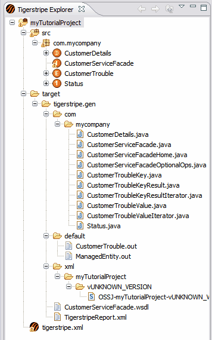

Eclipse is centered around a workspace that contains projects. Each project is a container for resources (For example, files, source code, and directories) that are contextualy linked. Tigerstripe Workbench follows the same principle and introduces a specific type of Eclipse project; that is, Tigerstripe Projects. Tigerstripe Project contain the specifics of a Tigerstripe Service Contract Model. As a result, Tigerstripe Projects contain Service Contract model components (such as artifacts), documentation, and other files or directories that are relevant (and needs to be stored) within the context of a project.
This section discusses the details about the structure and content of Tigerstripe Projects. For more details about operations on Tigerstripe Projects, refer to Creating a New Tigerstripe Project.
Tigerstripe Projects are organized around the following components:
- Project Descriptor: Stored as a self-contained XML file (tigerstripe.xml), this file needs to be in the top-level directory of your Tigerstripe Project. It contains details and documentation about your Tigerstripe Project and it is a mandatory piect of your Tigerstripe Project.
- Source Model: The source model contains all source Artifacts for your Tigerstripe Service Contract model. Artifacts are organized in packages and define your information models and service capabilities.
- Project Dependencies: The project dependencies are references to other Tigerstripe Project components. A set of projects can define dependencies to a common project where each of your Tigerstripe Projects can reference the model defined in the common project.
- Target Directory: This is where all your generated files, either code or documentation, are located.
These components constitute the source model of a Tigerstripe Project and they allow the Tigerstripe Engine to generate your target Service Contracts. Consequently, these components are the only components intendend to be placed under version control. For more details on how to control versioning of your Tigerstripe Project, refer to Source Control Integration.
The following image is an example of the Tigerstripe Explorer with the above components displayed:

Tigerstripe projects are proper Eclipse projects. As such they contain hidden files that Eclipse relies on. These files are created automatically by Eclipse and Tigerstripe when a new Tigerstripe project is created through the corresponding wizard. Without these Tigerstripe and/or Eclipse cannot function properly. In other words, creating a directory with a tigerstripe.xml file at its root is not sufficient to make a valid Tigerstripe Project.
When you open a Tigerstripe Project, that project is continuously audited in the Project Auditor. The Project Auditor monitors your project for inconsistencies and errors and notifies you of any problems during the design. The result is a list of Errors, Warnings and Information Messages related to your project.
Your project status is determined by the message severity of the message displayed in the list of messages by the Project Auditor.
Note: Your project status will continue to be in "Error", error messages will continue to displayed by the Project Auditor, and the generation of the corresponding Service Contract may be inconsistent or incorrect until you correct said errors.
Each of the error messages are attached to specific resources in your project (For example, Artifacts or Descriptor) and are represented in the Tigerstripe Explorer. For each of the errors, an explanation is provided in the Problems View in the Tigerstripe Perspective. For more details possible error messages, please refer to Project Audit Troubleshooting.